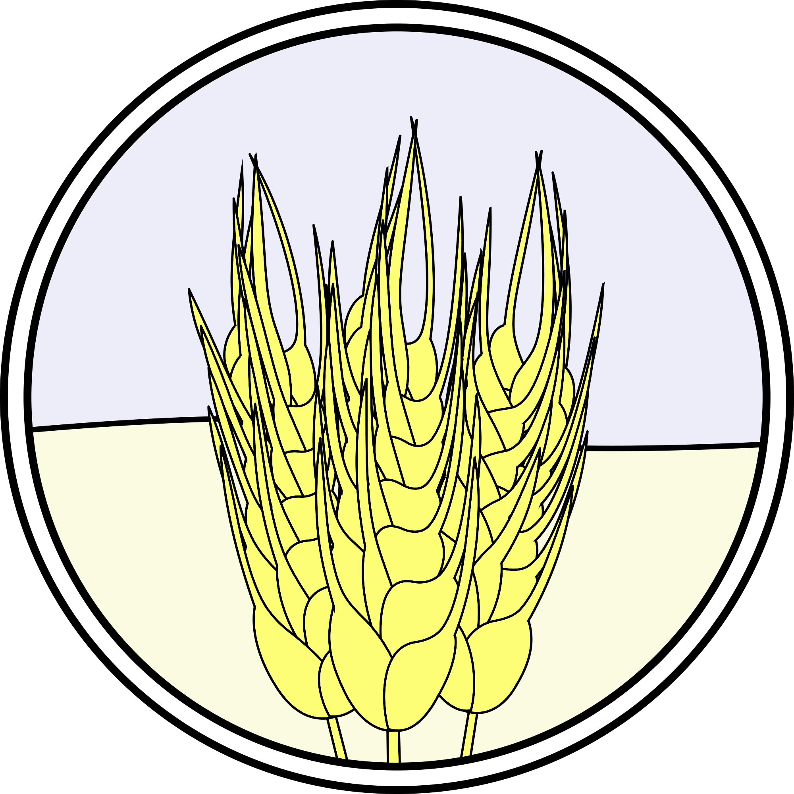

üñºÔ∏è –ö–∞—Ä—Ç–∏–Ω–∫–∏
Колоски пшениці

Колоски пшениці — головна зернова культура Вінниччини, що займає провідне місце у сільському господарстві регіону. Саме з колосків формується врожай, який забезпечує населення хлібом та іншими продуктами.
Паросток гречки
Паросток гречки символізує початок росту культури, яка добре пристосована до кліматичних умов Вінниччини. Гречка швидко розвивається і не потребує надмірного догляду.
Початок кукурудзи
Початок кукурудзи — основна частина рослини, в якій формується врожай. Кукурудза є однією з найпоширеніших культур на Вінниччині, використовується і як харчовий продукт, і як корм для тварин.
Гілочки овесу

Колосся вівса показує розміщення зерен у рослині; овес вирощують і як продовольчу, і як кормову культуру. Овес добре підходить для систем сівозміни й дає універсальну сировину.
Соняшник

Соняшник — одна з найпоширеніших олійних культур Вінниччини. Його великі кошики містять насіння, з якого отримують цінну олію.

На цьому все!